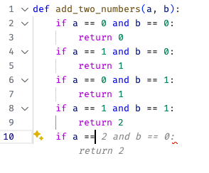

Passive Prediction, Internal Validity, and Alignment#
In this chapter, we will discuss a range of considerations that come into play when evaluating the internal validity of a model designed to answer a Passive Prediction Question. As with Exploratory Questions, I will assume you are already familiar with the usual methods of quantitatively measuring the quality of a model used for Passive Prediction. Instead, my focus will be on the kind of higher-level considerations that you should reflect on before and after you engage in the standard practices of model fitting and diagnostics you likely learned in your machine learning or statistics course.
Alignment#
After the last chapter, you’d be forgiven for wondering whether I’m crazy (or just a bad writer) given my insistence on referring to a model that reads mammograms as “a model that answers the question: if a radiologist were to look at this mammogram, would they conclude it showed evidence of cancer?” “A model that reads mammograms” is clearer and more succinct, after all.
So why have I insisted in continuing to discuss models in this way? Because while my formulation is less concise, it is also much more accurate.
The way that most statistical models are developed (“trained”) to answer Passive Prediction Questions is by using a large dataset of “training examples.” These training examples are observations in which the outcome we will eventually ask the model to predict is filled in.
For models designed to predict future events, our training data will be historical data in which the outcomes the model will eventually be designed to predict — like surgical complications or factory machine failures — have already occurred.
For models designed for automation, our training data will be records of a person completing the task the model will eventually be designed to automate. To train a mammogram reading algorithm, in other words, you first need a database of mammograms that radiologists have already labeled as indicating cancer or not. And what the model is actually trained to do is not “find cancer” but rather to “give the same answers given by human radiologists.”
This is where the distinction between “predicting what a radiologist would say” and “detecting cancer” becomes important: because this kind of statistical model was trained to emulate the behavior of radiologists in labelled mammograms, the model will recapitulate any systematic biases held by the human radiologists who reviewed the mammograms in the training data. Did the radiologists struggle to detect cancer in dense breast tissue? So too will the algorithm trained on their labels.
The difference between what you want a model to do (detect cancer) and what it actually does (guesses what a radiologist would do) is referred to as a model’s alignment, and the fact there is nearly always a gap between what we want a model to do and what it actually does is commonly referred to as an “alignment problem.”
And as we’ll discuss in detail below, often this difference between what we want a model to do (for example, find the best applicant for a job) and what the model is actually doing (like emulating biased human hiring managers) is how biased algorithms arise.
Note
The terms “alignment” and “the alignment problem” I believe originated among computer scientists interested in artificial intelligence (and the possibility we might someday create a super-intelligent AI whose interests may not align with our own). With the rise of LLMs like chatGPT and Gemini, use of the term has spread, and data scientists from a range of backgrounds are becoming increasingly comfortable using the term.
Interested in AI safety? Then I cannot over-recommend the youtube videos of Rob Miles — an AI safety scholar and exceptional science communicator. He has a great Intro to AI Safety talk here that’s a good starting place, and a a HUGE library of videos on AI safety at all levels of granularity and nuance on his channel here.
How do Large Language Models (LLMs) Fit Into This?#
Given their emergence as one of the most high profile examples of something people call “AI” these days, it’s worth directly addressing how LLMs like chatGPT, Llama, Bard, etc. fit into this framework.
One of the most powerful ways to understand LLMs is to think of them as tools for answering “If I came across this text [whatever text is in the LLMs prompt, pre-prompts, or other inputs in the model’s context window] while wandering around the internet,[1] what word am I most likely to encounter next?” LLMs then ask this question over and over, adding the newly selected word to the context window one at a time and then feeding the updated “conversation” back into itself as input to help it predict the next word. Indeed, this repetitiveness is why the technology behind most LLMs is called a recurrent neural network — because it keeps adding a word to the “conversation” you are having (its “context window”), then feeding the updated conversation back into the model as an updated input.
To be clear, this is a little reductionist. First, LLMs are able to abstract away from literal text to something like the meaning of words — they recognize that “pet” and “dog” have similar meanings in the sentences “I took my dog for a walk” and “I took my pet for a walk” — but even these abstractions are the result of looking for common patterns across existing text. And second, LLMs are also “fine-tuned” by having humans rate responses. But these nuances don’t change the fact that fundamentally LLMs are tools for recapitulating text and ideas that already exist in the world, with a strong bias towards what humans have tended to write most on the internet — a truth that both explains some of their power, but also helps to explain their fundamental limitations (e.g., their complete lack of fidelity to the truth, the fact they reflect societies’ gender and racial biases, etc.).
Alignment and Coding LLMs: An Example#
To illustrate what an alignment issue looks like with LLMs, let’s consider a simple example I’m stealing from Rob Miles, whose work I recommended above.
When we use a coding assistant LLM, what we want is for it to help us write good code. But LLMs aren’t designed to write good code, they’re designed to write the code that is most like what they would find on a website/github repo if what came before it looked like the code in the file you’re working on.
A consequence of this is that if you have a project where you’ve been writing bad code, what your coding assistant is likely to do is fill in more bad code. And crucially, it isn’t filling in bad code because it can’t write good code — it’s not a problem of capability — it fills in bad code because what the model does and what we want it to do are different things.
To illustrate, suppose I start writing a function to add two numbers, a and b. And suppose I was a really bad programmer who started off with something like:
def add_two_numbers(a, b):
if a == 0 and b == 0:
return 0
if a == 1 and b == 0:
return 1
What code is chatGPT going to suggest to build on what I’ve started? Will it suggest a re-write to return a+b? Nope! As of early 2025, this is what I get:

(Your mileage may vary — these models are constantly changing, LLM results are probabilistic not deterministic even for the same inputs with the same model, and model behavior will also differ depending on your input context, retained chat history, etc.)
This is obviously an extreme example, but it’s extreme for the purpose of illustration. Perhaps more importantly for you, the young data scientist, this happens at all level of coding. No one reading this book is likely to write crazy code like that, but there is a good chance you aren’t writing what you think is the best code you’ll ever write. And given that, it’s important to understand that chatGPT isn’t going to try to help you get better — it’s going to help you “do more of the same.” I think this is a little off-topic, but that’s also the risk with using these tools too much as a young programmer: they can get you stuck at a level of programming and understanding, limiting your growth by just reinforcing the practices you have and giving you the illusion you’re better at programming than you actually are.
Bias#
I’ve started with the preceding example because it feels relevant for the average young data scientist, but providing less-than-amazing code suggestions is obviously not the reason to be most concerned about alignment issues. The more pervasive and important reason to recognize that the models we use to answer Passive Prediction Questions are not just “finding the best job candidate,” “detecting cancer,” or “identifying the people most likely to commit a crime,” but are instead trying to replicate the (usually human) behavior that gave rise to the training data is that it helps to explain why so many uses of machine learning recapitulate and reinforce human biases.
There was a time, not that long ago, that I heard the CEO of a company that marketed a tool for screening job applications say in a nationally broadcast interview “and the best part is our tool helps to reduce bias because an algorithm can’t be racist.”
Thankfully, I think most data scientists have long since stopped believing in this fallacy. News articles are now regularly published on cases of “racist (or misogynistic) algorithms.” In 2018, for example, Reuters reported that Amazon was forced to scrap an effort to use machine learning to automatically review resumes because it turned out the algorithm was biased against women. Medical algorithms prioritize White patients over Black patients for kidney transplants and preventative care. Online image search has strong gender biases, favoring men for traditionally male jobs (doctors, lawyers, etc.) and women for traditional female jobs (nurses, teachers, etc.). And racially biased models are being used in place of standardized testing.
But not everyone understands why machine learning is prone to bias. Many think the issue is just one of poor implementation by the data scientists writing and deploying the algorithms. And in some cases, that’s probably the case — facial recognition algorithms have been found to perform better on White men than women and People of Color due, in significant part, to no one bothering to ensure the training data had enough training examples of non-White men.
But in many other cases, the problem is not negligence, but rather a failure of data scientists to understand exactly how their algorithms work. In short, when algorithms are trained on historic data, then by design they pick up not just the patterns in the data you want them to replicate, but also all the inequities and biases of society that were present when that historic data was being created.
To illustrate, consider the example of the Amazon algorithm that was discarded because it turned out to be biased against women. The exact details of the source of the bias is unclear — for obvious reasons Amazon is not eager to report on the failure — but my suspicion is that things went wrong in one of two ways.
The first is that the algorithm was given data on all past Amazon applicant resumes, along with data on which applicants had actually been hired. The algorithm was then effectively trained to answer the question “If an Amazon hiring manager looked at this resume, is it likely they would be hired?” In that case, the algorithm was recapitulating the gender bias of previous hiring managers.
My second guess is that the algorithm was given the resumes of current employees along with employee reviews. The algorithm was effectively being asked to answer the question “Given this resume, is it likely this is a person a current manager would rate highly once employed?” In that case, the algorithm was recapitulating gender biases in employee reviews.
In either case, these are examples of an alignment problem: the people developing these models wanted the algorithm to pick the applicants who would be the most productive employees, but the model they actually developed was trying to identify employees who looked like previously successful applicants. Had the previous hiring system been effective, this wouldn’t be a problem, but because the previous system included a gender bias, so too did the resulting algorithm. But because the engineers developing these tools did not think carefully enough about the question the model was actually being taught to answer, the problem was not identified until it was too late.
Bias in using machine learning to answer Passive Prediction Questions, in other words, isn’t usually the result of the algorithm “going awry”; bias in machine learning is usually the result of an algorithm operating exactly as designed: as a mirror that faithfully replicates precisely what it sees in the training data, racism, misogyny, classism, religious intolerance, and all.